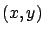
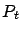

Siguiente: Cómputo de distancia
Subir: Desarrollo de Software
Anterior: XML y SAPO
Índice General
Algoritmos y cálculos implementados
En el presente capítulo se detallan las implementaciones hechas en
SAPO para diferentes algoritmos utilizados en el cálculo de
la potencia mediana de señal, algunos comunes a todos los modelos
(como el cómputo de la distancia o de la ganancia), otros más
complejos requeridos por modelos particulares. Por ejemplo, el
COST231 Walfisch-Ikegami necesita la verificación de línea de vista
y el cálculo del ángulo de orientación de la calle; el modelo MOPEM
agrega el cálculo de la distancia a las esquinas más cercanas. El
método de Vogler exige la resolución de la integral de atenuación
por múltiples cuchillos, así como la identificación del perfil de
cuchillos a considerar.
El cálculo de la potencia mediana de señal en un punto cualquiera
 del mapa se obtiene aplicando la fórmula:
donde es la potencia de recepción en el punto ,
 es la potencia de trasmisión de la antena en dBm,  es la
ganancia de la antena trasmisora (que se calcula según se explicará
en la sección 10.2) y es la fórmula de pérdida de
camino específica del modelo de propagación. La antena receptora se
considera isotrópica, por esto su ganancia no se incluye en la
ecuación.
es la
ganancia de la antena trasmisora (que se calcula según se explicará
en la sección 10.2) y es la fórmula de pérdida de
camino específica del modelo de propagación. La antena receptora se
considera isotrópica, por esto su ganancia no se incluye en la
ecuación.
Subsecciones
Siguiente: Cómputo de distancia
Subir: Desarrollo de Software
Anterior: XML y SAPO
Índice General
SAPO